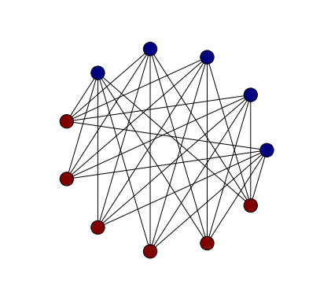
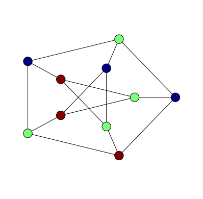
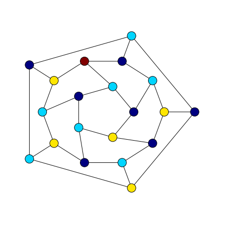
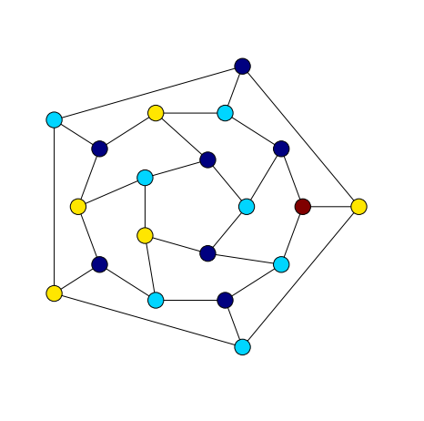

In this post we demonstrate some of the basic ideas of vertex colouring. In particular, we demonstrate the following result.
Theorem 1
For every graph \(G\), \[\chi(G) \leq 1 + \Delta(G)\]
One proof of this result is found on p.182 of Chartrand and Zhang (2008) where it appears as Theorem 7.8. The proof is no more than a precise version of the observation that if we apply a greedy vertex colouring then we only need at most \(\Delta(G) + 1\) colours because if we have that many colours then when it comes time to colour a certain vertex one is bound to be missing from the at most \(\Delta(G)\) neighbours of that vertex.
Greedy Vertex Colouring
The greedy vertex colouring algorithm starts with the vertices of a graph listed in some order \(v_{1},v_{2},...v_{n}\). It begins with the first vertex and assigns that vertex colour 1. To colour a vertex \(v_{j + 1}\) further along in the sequence we choose the first colour which is not used on any of the already coloured vertices \(\{v_{1},...v_{j}\}\).
Below is an implementation of the greedy vertex colouring algorithm for NetworkX graphs. In fact, this implementation is a little more flexible than the one described in the previous paragraph. It allows for some customisation of the algorithm’s behaviour. Specifically, it allows use to specify both the ordering of the nodes and the strategy used to select which colour to use one a particular node.
Here we have only implemented one strategy, the first_available strategy of the greedy algorithm which chooses the first colour not used on already coloured neighbours.
def first_available(G, node, palette):
"""Returns the first colour in palette which is not used in G on any
neighbours of node, where D is the maximum degree."""
used_on_neighbours = []
for v in G[node]:
used_on_neighbours.append(G.node[v].get('colour'))
available_colour_set = set(palette) - set(used_on_neighbours)
return sorted(available_colour_set)[0]
def vcolour(G, choose_colour = first_available, nodes = None):
"""Visits every vertex in G and assigns a colour from [0..D] given by
the choose_colour function object, where D is the maximum degree"""
if nodes == None:
nodes = G.nodes()
degseq = G.degree().values()
if degseq!=[]:
palette = range(max(degseq) + 1)
else:
palette = range(1)
for node in nodes:
G.node[node]['colour'] = choose_colour(G, node, palette)Notice that this implementation colours graphs in-place. It adds a colour attribute to every vertex and the value of this attribute is the colour given to that vertex.
Below is an example of using the greedy colouring algorithm to colour \(K_{9}\). By the earlier theorem we would expect a colouring with 9 colours, as \(\Delta(K_{9}) = 8\).
import networkx as nx
setfigsize(5, 5)
options = {
'with_labels': False,
'node_size': 300,
'width': 1,
}
def colours(G):
"""Returns a list of colours used on vertices in G."""
return [x.get('colour') for x in G.node.values()]
K9 = nx.complete_graph(9)
vcolour(K9)
nx.draw_circular(K9, node_color = colours(K9), **options)
The colours function gets a list of colours used on vertices which is then passed to the draw_circular function as the argument of a keyword parameter node_colour.
We put other options into a dictionary object so that we can reuse the same options in other drawings below.
Colouring a complete graph doesn’t pose much of a challenge to any colouring algorithm. All that is needed to assign a different colour to each vertex so algorithms even simpler than the greedy algorithm will succeed in this case to find a minimal colouring.
A slightly more challenging graph is a complete bipartite graph. If we consider \(K_{5,6}\), for example, the above Theorem only guarantees a colouring with 7 colours. A minimal colouring, however, uses only 2 colours.
K56 = nx.complete_bipartite_graph(5,6)
vcolour(K56)
nx.draw_circular(K56, node_color = colours(K56), **options)
It isn’t really all that surprising that we found a minimal colouring here. If we have managed to colour some of the vertices properly with only two colours in such a way that all vertices of one colour lie in one of the bipartitions and all the vertices of the other colour lie in the other bipartition then it’s obvious how to extend this to a similar 2-colouring with fewer uncoloured vertices.
Colouring Some Classic Graphs
In this section we apply the greedy colouring algorithm from the previous section to some well-known graphs and compare the number of colours used with the chromatic number.
First we consider the Petersen graph. It is known to have chromatic number 3 and, indeed, with our greedy colouring algorithm we find a 3-colouring.
P = nx.petersen_graph()
vcolour(P)
nx.draw_shell(P, nlist=[range(5,10), range(5)], node_color = colours(P), **options)
The dodecahedral graph is a slightly different story. It also has chromatic number 3 but with the greedy algorithm we find a colouring with four colours.
setfigsize(6, 6)
G = nx.dodecahedral_graph()
vcolour(G)
nlist = [[2,3,4,5,6],[8,1,0,19,18,17,16,15,14,7],[9,10,11,12,13]]
nx.draw_shell(G, nlist = nlist , node_color = colours(G), **options)
A 4-colouring of a 3-regular graph is still in accordance with Theorem 1. We might, though, do better by experimenting a little with node orderings or colour choice strategies. The first thing worth trying would be a few random orderings, hoping to hit upon one that uses only 3 colours.
random.seed(1)
G = nx.dodecahedral_graph()
nodes = G.nodes()
random.shuffle(nodes)
vcolour(G, nodes = nodes)
nlist = [[2,3,4,5,6],[8,1,0,19,18,17,16,15,14,7],[9,10,11,12,13]]
nx.draw_shell(G, nlist = nlist , node_color = colours(G), **options)
As luck would have it, we have hit upon a 3-colouring straight away, without much effort.